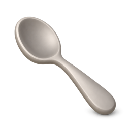

Recepti
Pretraži po nazivu ili sastojku i suzi izbor filterima.

Nema takvih recepata
Probaj s drugim pojmom ili poništi filtere. Možeš pitati i Kuhara Bota.
Pretraži po nazivu ili sastojku i suzi izbor filterima.

Probaj s drugim pojmom ili poništi filtere. Možeš pitati i Kuhara Bota.